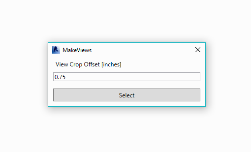

Forms¶
Forms are provided to facilitate user input.
SelectFromList¶

-
class
rpw.forms.SelectFromList(*args, **kwargs)¶ WPF form with ComboBox dropdown.
Parameters: - title (str) – Title of form
- options (dict,list[str]) – Dictionary (string keys) or List[strings]
- description (str) – Optional Description of input requested [default: None]
- sort (bool) – Optional sort flag - sorts keys [default: True]
- exit_on_close (bool) – Form will call sys.exit() if Closed on X. [default: True]
- Usage:
>>> form = SelectFromList('Test Window', ['1','2','3']) >>> # Dropdown shows '1', '2' ,'3'. User clicks Select '1' >>> form True >>> form.selected '1' >>> # Dictionary >>> form = SelectFromList('Test Window', {'Text':str, 'Number':int}) >>> # User clicks Text >>> form True >>> form.selected str
-
form_class¶ alias of
SelectFromListForm
TextInput¶
-
class
rpw.forms.TextInput(*args, **kwargs)¶ WPF form with TextInput.
Parameters: - title (str) – Title of form
- default (str) – Optional default value for text box [default: None]
- description (str) – Optional Description of input requested [default: None]
- exit_on_close (bool) – Form will call sys.exit() if Closed on X. [default: True]
- Usage:
>>> prompt = TextInput('Title', default="3") >>> prompt.show() >>> print(prompt.selected)
-
form_class¶ alias of
TextInputForm
Alert¶

-
class
rpw.forms.Alert(message, title='Alert', heading='')¶ -
__init__(message, title='Alert', heading='')¶ Creates Standard Revit Alert.
Parameters: - message (str) – TaskDialog Message
- title (str, optional) – TaskDialog Title
- heading (str, optional) – TaskDialog Message Heading
- Usage:
>>> Alert('Your Message', title="Title", heading="Some Heading")
-
Implementation¶
class SelectFromListForm(Window):
"""
WPF form with ComboBox dropdown.
Args:
title (str): Title of form
options (dict,list[str]): Dictionary (string keys) or List[strings]
description (str): Optional Description of input requested [default: None]
sort (bool): Optional sort flag - sorts keys [default: True]
exit_on_close (bool): Form will call sys.exit() if Closed on X. [default: True]
Usage:
>>> form = SelectFromList('Test Window', ['1','2','3'])
>>> # Dropdown shows '1', '2' ,'3'. User clicks Select '1'
>>> form
True
>>> form.selected
'1'
>>> # Dictionary
>>> form = SelectFromList('Test Window', {'Text':str, 'Number':int})
>>> # User clicks Text
>>> form
True
>>> form.selected
str
.. note: XAML is embeded instead loaded from file so that package can be
kept as .zip for dynamo.
"""
LAYOUT = """
<Window
xmlns="http://schemas.microsoft.com/winfx/2006/xaml/presentation"
xmlns:x="http://schemas.microsoft.com/winfx/2006/xaml"
xmlns:d="http://schemas.microsoft.com/expression/blend/2008"
xmlns:mc="http://schemas.openxmlformats.org/markup-compatibility/2006"
xmlns:local="clr-namespace:WpfApplication1"
mc:Ignorable="d" Height="140.139" Width="325" ResizeMode="NoResize"
Title="" WindowStartupLocation="CenterScreen" Topmost="True" SizeToContent="WidthAndHeight">
<Grid Margin="10,0,10,10">
<Label x:Name="selection_label" Content="Select Item" HorizontalAlignment="Left" Height="30"
VerticalAlignment="Top" Width="299"/>
<ComboBox x:Name="combo_data" HorizontalAlignment="Left" Margin="0,30,0,0"
VerticalAlignment="Top" Width="299"/>
<Button x:Name="button_select" Content="Select" HorizontalAlignment="Left" Height="26"
Margin="0,63,0,0" VerticalAlignment="Top" Width="299"/>
</Grid>
</Window>
"""
def __init__(self, title, options, description=None, sort=True):
self.selected = None
self.ui = wpf.LoadComponent(self, StringReader(SelectFromListForm.LAYOUT))
# self.ui = wpf.LoadComponent(self, os.path.join(cwd, 'form_select_list.xaml'))
self.ui.Title = title
if description is not None:
self.ui.selection_label.Content = description
self.ui.button_select.Click += self.select_click
self.options = options
if isinstance(options, dict):
options = options.keys()
if sort:
options = sorted(options)
self.ui.combo_data.Items.Clear()
self.ui.combo_data.ItemsSource = options
self.ui.combo_data.SelectedItem = options[0]
self.ui.combo_data.Focus()
def select_click(self, sender, e):
selected = self.ui.combo_data.SelectedItem
if isinstance(self.options, dict):
selected = self.options[selected]
self.selected = selected
self.DialogResult = True
self.Close()
def show(self):
return super(SelectFromListForm, self).ShowDialog()
class TextInputForm(Window):
"""
WPF form with TextInput.
Args:
title (str): Title of form
default (str): Optional default value for text box [default: None]
description (str): Optional Description of input requested [default: None]
exit_on_close (bool): Form will call sys.exit() if Closed on X. [default: True]
Usage:
>>> prompt = TextInput('Title', default="3")
>>> prompt.show()
>>> print(prompt.selected)
"""
LAYOUT = """
<Window xmlns="http://schemas.microsoft.com/winfx/2006/xaml/presentation"
xmlns:x="http://schemas.microsoft.com/winfx/2006/xaml"
xmlns:d="http://schemas.microsoft.com/expression/blend/2008"
xmlns:mc="http://schemas.openxmlformats.org/markup-compatibility/2006"
xmlns:local="clr-namespace:WpfApplication1"
mc:Ignorable="d" Height="140.139" Width="325" ResizeMode="NoResize" Title="" WindowStartupLocation="CenterScreen" Topmost="True" SizeToContent="WidthAndHeight">
<Grid Margin="10,0,10,10">
<Label x:Name="selection_label" Content="Select Item" HorizontalAlignment="Left" Height="30" VerticalAlignment="Top" Width="299"/>
<TextBox x:Name="text_box" HorizontalAlignment="Left" Margin="0,30,0,0" VerticalAlignment="Top" Width="299"/>
<Button x:Name="button_select" Content="Select" HorizontalAlignment="Left" Height="26" Margin="0,63,0,0" VerticalAlignment="Top" Width="299"/>
</Grid>
</Window>
"""
def __init__(self, title, default=None, description=None):
self.selected = None
self.ui = wpf.LoadComponent(self, StringReader(TextInputForm.LAYOUT))
# self.ui = wpf.LoadComponent(self, os.path.join(cwd, 'form_text_input.xaml'))
self.ui.Title = title
self.ui.text_box.Focus()
if default is not None:
self.ui.text_box.Text = default
if description is not None:
self.ui.selection_label.Content = description
self.ui.button_select.Click += self.select_click
def select_click(self, sender, e):
self.DialogResult = True
self.selected = self.ui.text_box.Text
self.Close()
def show(self):
return super(TextInputForm, self).ShowDialog()
class Alert():
def __init__(self, message, title='Alert', heading=''):
"""
Creates Standard Revit Alert.
Args:
message (str): TaskDialog Message
title (str, optional): TaskDialog Title
heading (str, optional): TaskDialog Message Heading
Usage:
>>> Alert('Your Message', title="Title", heading="Some Heading")
"""
dialog = UI.TaskDialog(title)
dialog.MainInstruction = heading
dialog.MainContent = message
return dialog.Show()
class FormWrapper(object):
""" Wraps WPF Window """
def __init__(self, *args, **kwargs):
form_class = getattr(self.__class__, 'form_class', None)
self.__class__.__doc__ = form_class.__doc__
if not form_class:
raise Exception('FormWrapper is for inheritance only')
self.exit_on_close = kwargs.pop('exit_on_close', True)
self.form = form_class(*args, **kwargs)
def show(self):
results = self.form.show()
if not results and self.exit_on_close:
logger.debug('Form was closed. Script will exit.')
sys.exit(1)
elif results:
return True
else:
return False
def __getattr__(self, attr):
return getattr(self.form, attr)
class SelectFromList(FormWrapper):
form_class = SelectFromListForm
__doc__ = SelectFromListForm.__doc__
class TextInput(FormWrapper):
form_class = TextInputForm
__doc__ = TextInputForm.__doc__
if __name__ == '__main__':
prompt = SelectFromList('Title', ['A','B'], description="Your Options", exit_on_close=True)
prompt.show()
print(prompt.selected)
prompt = SelectFromList('Title', {'A':5, 'B':10}, description="Your Options", exit_on_close=True)
prompt.show()
print(prompt.selected)
prompt = TextInput('Title', default="3", exit_on_close=True)
prompt.show()
print(prompt.selected)
print('forms.py ran')
#